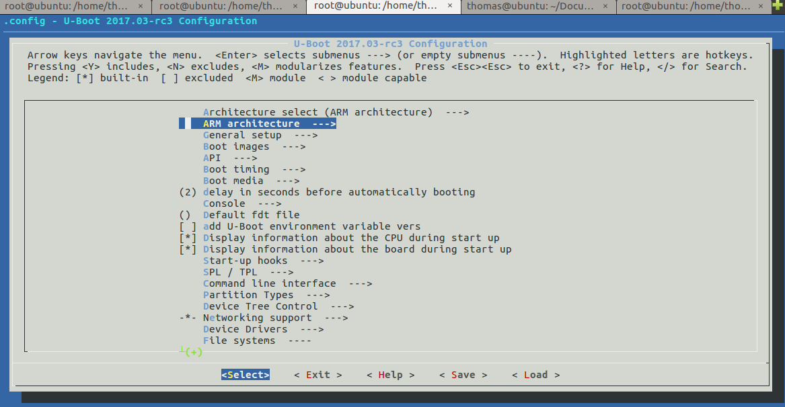

Zero u-boot编译和使用指南
Uboot的基本结构
- 下面来看看该uboot中的目录结构
├── api 存放uboot提供的API接口函数
├── arch 平台相关的部分我们只需要关心这个目录下的ARM文件夹
│ ├──arm
│ │ └──cpu
│ │ │ └──armv7
│ │ └──dts
│ │ │ └──*.dts 存放设备的dts,也就是设备配置相关的引脚信息
├── board 对于不同的平台的开发板对应的代码
├── cmd 顾名思义，大部分的命令的实现都在这个文件夹下面。
├── common 公共的代码
├── configs 各个板子的对应的配置文件都在里面，我们的Lichee配置也在里面
├── disk 对磁盘的一些操作都在这个文件夹里面，例如分区等。
├── doc 参考文档，这里面有很多跟平台等相关的使用文档。
├── drivers 各式各样的驱动文件都在这里面
├── dts 一种树形结构（device tree）这个应该是uboot新的语法
├── examples 官方给出的一些样例程序
├── fs 文件系统，uboot会用到的一些文件系统
├── include 头文件，所有的头文件都在这个文件夹下面
├── lib 一些常用的库文件在这个文件夹下面
├── Licenses 这个其实跟编译无关了，就是一些license的声明
├── net 网络相关的，需要用的小型网络协议栈
├── post 上电自检程序
├── scripts 编译脚本和Makefile文件
├── spl second program loader，即相当于二级uboot启动。
├── test 小型的单元测试程序。
└── tools 里面有很多uboot常用的工具。
了解了uboot的基本结构，我们可以知道一些相关的配置在什么地方了。
lichee的uboot配置文件放在confgs文件目录下面，名称为
LicheePi_Zero_480x272LCD_defconfig
LicheePi_Zero_800x480LCD_defconfig
LicheePi_Zero_defconfig
这3个配置是根据不同的Zero显示设备进行的配置，使用其中之一即可，可以在uboot目录下执行命令
make LicheePi_Zero_defconfig
这样配置就生效了。
- 关于设备的配置引脚信息可以在arch/arm/dts的设备树下面进行查找。
通过查看arch/arm/dts/Makefile我们看到下面这段关于v3s的代码：
dtb-$(CONFIG_MACH_SUN8I_V3S) += \
sun8i-v3s-licheepi-zero.dtb
我们基本可以找到对应的dtb文件就是sun8i-v3s-licheepi-zero.dtb
打开 sun8i-v3s-licheepi-zero.dts （dtb是object文件，相当于*.o,
dts相当于*.c）文件
#include "sun8i-v3s.dtsi" //这个文件包含了sun8i-v3s系列的配置
#include "sunxi-common-regulators.dtsi"
/ {
model = "Lichee Pi Zero";
compatible = "licheepi,licheepi-zero", "allwinner,sun8i-v3s";
aliases {
serial0 = &uart0;
};
chosen {
stdout-path = "serial0:115200n8";
};
};
&mmc0 {
pinctrl-0 = <&mmc0_pins_a>;
pinctrl-names = "default";
broken-cd;
bus-width = <4>;
vmmc-supply = <®_vcc3v3>;
status = "okay";
};
&uart0 {
pinctrl-0 = <&uart0_pins_a>;
pinctrl-names = "default";
status = "okay";
};
&usb_otg {
dr_mode = "otg";
status = "okay";
};
&usbphy {
usb0_id_det-gpio = <&pio 5 6 GPIO_ACTIVE_HIGH>;
status = "okay";
};
从这个配置文件中可以看出，我们所用的stdout输出是用的uart0
波特率115200，mmc的配置， uart0的引脚采用的是uart0_pins_a 等。
如若需要修改对应的输出，可以在这个文件中修改。
menuconfig里的常见配置选项
编译uboot的需要生成.config文件来将该配置生效。配置的生效有两步：
第一步，先将Zero默认的配置加载进来：
Zero已经将配置定制好了，执行相应的命令就可以生成了。下面是生成配置的命令
make ARCH=arm CROSS_COMPILE=arm-linux-gnueabihf- LicheePi_Zero_800x480LCD_defconfig
这个命令可以分为3个部分
设置变量ARCH值为arm\
设置变量CROSS_COMPILE值为arm-linux-gnueabihf-\
make LicheePi_Zero_800x480LCD_defconfig
最后一个 make LicheePi_Zero_800x480LCD_defconfig
才是重点，执行这条命令就可以对应生成一个编译所需要的配置文件.config
第二步，对于配置文件可以通过是图形界面的方式修改某一个特定配置选项
有了配置文件，需要的时候我们可以对其进行修改，linux提供了一种图形界面的方式，这种方式一般在后期需要改某些编译选项的时候，用户交互比较方便，现在我们可以来看看有哪些配置。
make ARCH=arm menuconfig
执行这个命令就可以出现一个UI交互比较好的配置文件选项，可以看下面的截图：

---按回车，即选择当前菜单\
------- 按Y 代表该config选项选中\
------- 按N 代表不选中该选项\
-------- 按M
代表该驱动编译成*.ko的方式，在系统起来之后，当驱动需要的时候加载\
</>---------按/ 可以查找某个选项\
---------退出
<*> ----------按Y选中后的状态
这里面有几个常见的配置选项我们可以看下：
第一个Architecture select架构选择，不用质疑这个是ARM架构
第二个ARM architecture
这个选项比较重要，主要配置ARM框架下的常用的配置函数以及LCD等参数--- Target select (Support sunxi (Allwinner) SoCs) 进去之后可以选择sunxi Soc系列芯片 --- [*] Sunxi SoC Variant 这个就是对芯片Soc 的选择，我们可以看到配置选择了`sun8i (Allwinner V3s) (360) sunxi dram clock speed 配置dram的时钟速率 (14779) sunxi dram zq value 配置dram的ZQ值，是用来动态加强DDR3的 -*- Board uses DDR2 DRAM 使用DDR2 DRAM[*] Enable graphical uboot console on HDMI, LCD or VGA 这个就是在显示设备上使能串口控制 [ ] VGA via LCD controller support 使能支持VGA通过LCD的控制器，就是LCD和VAG转换需要的控制器 (x:800,y:480,depth:18,pclk_khz:33000,le:87,ri:40,up:31,lo:13,hs:1,vs:1,sync:3,vmode:0) LCD pane > 该选项就是配置LCD的分辨率的配置选项可以看到x是800 y是480 等等一些关于LCD的配置内容，点击回车进去可以对其进行修改。 (1) LCD panel display clock phase 这个是LCD的显示时钟相位 () LCD panel power enable pin LCD的电源使能引脚 () LCD panel reset pin LCD的复位引脚 (PB4) LCD panel backlight pwm pin 背光PWN引脚 这个应该是调节亮度的引脚PB4 [*] LCD panel backlight pwm is inverted 反转PWN背光引脚 [ ] LCD panel needs to be configured via i2c LCD panel support (Generic parallel interface LCD panel) ---> 这个选择支持的LCDpanel (X) Generic parallel interface LCD panel 这里选择支持通用的并行的LCD接口 ( ) Generic lvds interface LCD panel 这个是LVDS接口 ( ) MIPI 4-lane, 513Mbps LCD panel via SSD2828 bridge chip ( ) eDP 4-lane, 1.62G LCD panel via ANX9804 bridge chip ( ) Hitachi tx18d42vm LCD panel ( ) tl059wv5c0 LCD panel (0) GMAC Transmit Clock Delay ChainGeneral setup --->(0x400) Size of malloc() pool before relocation
这个我们就看下malloc的栈池分配了0x400大小Boot images --->(1008000000) CPU clock frequency
这里设置了CPU的时钟频率delay in seconds before automatically
booting这个是uboot开机的时候的一个等待时间的秒数，可以改大一点，默认是2sConsole ---> 这个就是串口打印的一些配置
Display information about the CPU during start up
开机的时候显示CPU信息。Display information about the board during start up
开机的时候显示BOARD的信息SPL / TPL ---> 这个就是SPL相关的配置了
[*] MMC raw mode: by sector 按扇区 (0x50) Address on the MMC to load U-Boot from mmc加载uboot的地址 [*] Support GPIO 支持GPIO [*] Support I2C 支持I2C [*] Support common libraries 支持通用lib [*] Support disk paritions 支持分区 [*] Support generic libraries 支持一般lib库 [*] Support MMC 支持MMC [*] Support power drivers 支持电源驱动 [*] Support serial 支持串口Command line interface --->这里存放的是u-boot启动的时候支持的cmd
基本常用的就是上述配置，其他配置都可以采用官方配置就可以了。
编译步骤
上面已经讲述了如何把配置文件进行生成.config文件。做好这两件事情之后就可以编译了。
官方git上给的命令是：
time make ARCH=arm CROSS_COMPILE=arm-linux-gnueabihf- 2>&1 | tee build.log
第一个time命令完全可以去掉，time主要为了计算该编译需要花费的时间
make ARCH=arm CROSS_COMPILE=arm-linux-gnueabihf-
这个之前的config也说了，其实就是给变量ARCH赋值arm
给CROSS_COMPILE赋值arm-linux-gnueabihf-
也可以先省去，剩下的： make 2>&1 | tee build.log
tee 这个命令是把make生成的log写入到build.log文件中，这样编译之后的log文件可以保留存有备份，也可以省去。
make 2>&1
查了下资料 数字2对应stderr 数字1对应stdout
这里即将标准err输出&作为连接符表示‘与’的意思，即标准输出和标准error输出都进行输出。
其实真正执行编译的是下面的命令：
make ARCH=arm CROSS_COMPILE=arm-linux-gnueabihf-
小伙伴可以试下，该命令是否可以编译出 u-boot-sunxi-with-spl.bin文件，其他的命令都是辅助编译的命令，用于调试的时候开启。亲测直接make CROSS_COMPILE=arm-linux-gnueabihf- 也是可以的。
FAQ：下面的内容可能其他章节会讲到，所以下面就大致讲下编译环境的搭建
本文所描述的uboot是基于Lichee_Pi/uboot.git的版本
先下载代码，执行下面的命令。
- git clone https://github.com/Lichee-Pi/u-boot.git
- git checkout -b v3s-current origin/v3s-current
- export ARCH=arm CROSS_COMPILE=arm-linux-gnueabihf-
- make LicheePi_Zero_defconfig
先要配置好编译环境可以参照开发环境搭建
操作系统官方默认是在Ubuntu 14.04 64bit的环境下编译的。
我试了下在Ubuntu16.04.1的ubuntu的版本下进行编译。
装好虚拟机操作系统之后，我们先安装一些依赖包
sudo apt-get install git-core gnupg flex bison gperf build-essential zip curl zlib1g-dev libc6-dev lib32ncurses5-dev gcc-multilib x11proto-core-dev libx11-dev lib32z1-dev libgl1-mesa-dev g++-multilib mingw32 tofrodos python-markdown libxml2-utils
sudo apt-get install gcc-arm-linux-gnueabihf
执行完这两条命令之后，如果安装成功，应该是可以编译的，当然我在尝试的时候最后mingw32会出现一些问题。
可能对于ubuntu16.04版本还要根据
git上编译坑_Ubuntu16.04编译过程踩坑记录
来修改gcc的版本.然后呢根据编译坑_Ubuntu16.04编译过程踩坑记录二
来修改部分的mingw32相关的编译选项，对了后面编译uboot的时候还会遇到dtc编译版本低的问题，所以在此还要执行sudo apt-get install device-tree-compiler的命令升级dtc。至此编译环境基本搭建好了。
这些都是楼主踩过的坑，感谢楼主，我们应该不需要踩了。还是挺有用的。
接着就可以下载uboot的源代码： https://github.com/Lichee-Pi/u-boot.git
执行这段命令uboot的源代码就下下来了。